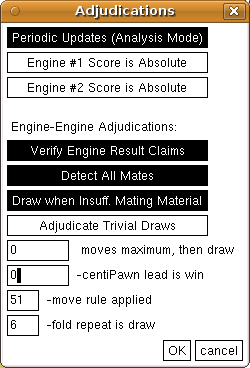
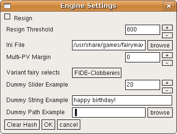
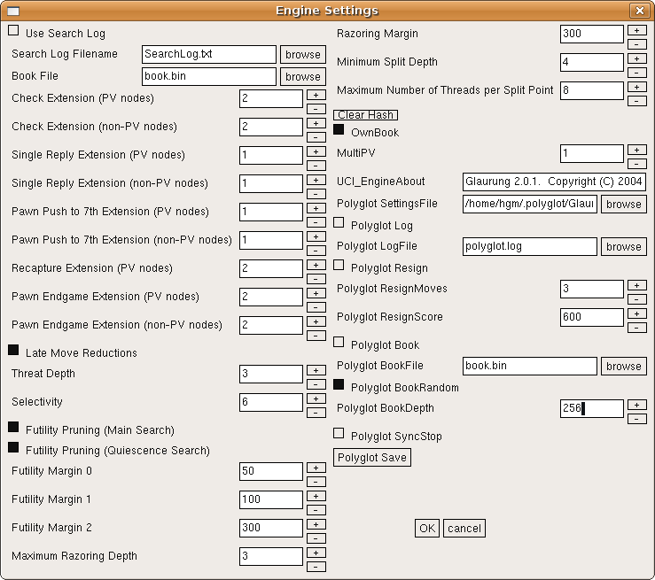

New Features

New Features |
|
Incorporating the Winboard_x forkWhen official development of XBoard stalled after release of 4.2.7, unofficial forks emerged further developing WinBoard without paying attention to XBoard. Changes in the back-end even destroyed the possibility to build an XBoard from these modified sources. XBoard 4.4.0 pulls some of these forks back into the main line of XBoard development, by at least restoring the compatibility of the X11 front-end files with the common back-end, even though most of the new front-end functions of WinBoard have not been ported yet. In particular, XBoard 4.4.0 is based on the Winboard_x fork by Alessandro Scotti. That means that a WinBoard built from these sources has all the enhancements associated with Winboard_x. These include the auxiliary windows for engine output, move history and evaluation graph, board textures and font-based rendering of pieces. For further details, see the page on Winboard_x. |

|

|
Different board formats and unorthodox piecesXBoard 4.4.0 also inorporates the enhancements of the WinBoard 4.3 fork (aka WinBoard F) by H.G.Muller. This fork itself was built on Winboard_x. At the later stages of this fork (from 4.3.14 on) the compatibility with XBoard was restored, and they came with a working XBoard that could benefit from the enhancements in the common back-end. These included:
For further details of the back-end enhancements, see the page on WinBoard 4.3. |
Improved analysis windowOne of the first Winboad_x front-end features we ported to XBoard was the engine-output window, which is an enhanced version of the old analysis window. Rather than just displaying the latest line of engine output, it displays the entire list of it for the current position. Information like current move being searched, number of moves, and nodes searched are displayed above the pane with engine output (provided 'periocic updates' is switched on). The window is also made more generally available: apart from in analysis mode, it can also be brought up when playing against an engine, so you can see the full engine output, rather than just the latest line in the message field above the board. In Two Machines mode the window even splits into two identical panes, so you can see the output of both engines. An icon above each pane indicates whether the engine producing that output is thinking or pondering. |

|
|  |
Some new menu dialogsPrevious versions of XBoard were sorely lacking in menu dialogs, and had to be controlled almost entirely through command-line options. Only options that had a simple on/off setting could be controlled through the Options menu. The menu dialogs with the most important option settings have now been ported from WinBoard. In particular, the dialogs to specify the time control, general settings common to all engines, and the adjudication options now have their own menu dialogs. The latter options came with the WinBoard F back-end, as reliable adjudication of games only became possible when XBoard was fully aware of castling and en-passant rights. The general engine settings apply mainly to UCI engines supported through Polyglot. |
Configuring an engine through the GUIAn entirely new feature is a dialog through which you can interactively set the private options of engines. Especially UCI engines have many options, but this feature can work for native XBoard engines as well, through extensions of the protocol. Each engine can define its own set of options with name of its choosing, and tell XBoard what type of values the option can take (numeric, on/off, text, multiple choice). XBoard will then present these options to the user in an Engine Settings dialog, which will thus look completely different for each engines. When the user alters a value here, the new value is relayed to the engine. Shown are the Engine Settings dialogs for Glaurung 2.2 and Fairy-Max 4.8o  |  |